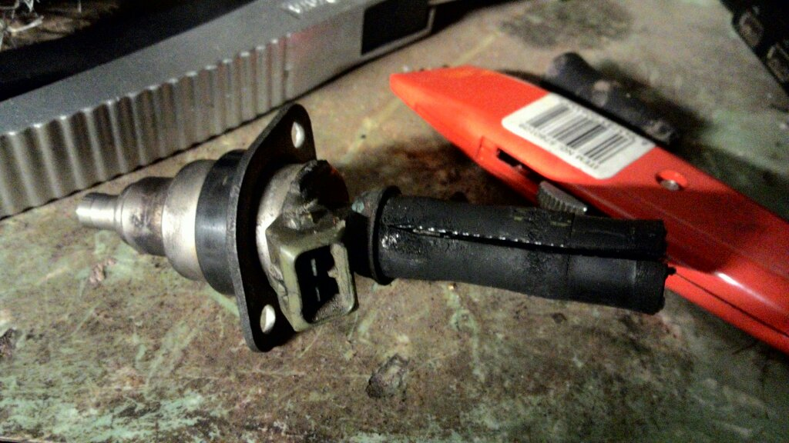

-Remove the injectors from the rail
-Using a stanley knife cut the hose from end to end.This should loosen the hose slightly.

-Use needle nose plyers to pry the hose off the injector. If the hose is brittle you may be left with a piece of hose stuck in the metal cap. This can be removed by fontiuing to cut the hose and pulling whats left out with needle nose plyers.
 -Remove the metal cap when it has come loose.
-Remove the metal cap when it has come loose.
 -Remove the filter from the injector. This can be done by using a screw to grab the edge and pull it out. Another option would be to pry it upward using plyers or a pick.
-Remove the filter from the injector. This can be done by using a screw to grab the edge and pull it out. Another option would be to pry it upward using plyers or a pick.
 -Remove the end cap. This can also be done using plyers. If it is brittle it may crack when attempting to remove.
-Fill the injectors with brake cleaner, you can pressurise the liquid using a siringe.
-Using a 9V battery, power the injector on and off in quick succession.
-Once the solution is coming through clean, install the new endcap to the injector
-Install the new filter to the injector using a flat surface to press it in flush.
-Cut a piece of ?/16 EFI fuel hose at a length of 50mm.
-Install the metal ring to the barbed side of the injector.
-Press the hose onto the barb ensuring it is fitted the whole way.
-The hose will seal fine without a hose clamp, but you could install one for extra safety.
-Install the large and small o-rings
-Repeat the steps for all of the injectors you wish to service.
-Remove the end cap. This can also be done using plyers. If it is brittle it may crack when attempting to remove.
-Fill the injectors with brake cleaner, you can pressurise the liquid using a siringe.
-Using a 9V battery, power the injector on and off in quick succession.
-Once the solution is coming through clean, install the new endcap to the injector
-Install the new filter to the injector using a flat surface to press it in flush.
-Cut a piece of ?/16 EFI fuel hose at a length of 50mm.
-Install the metal ring to the barbed side of the injector.
-Press the hose onto the barb ensuring it is fitted the whole way.
-The hose will seal fine without a hose clamp, but you could install one for extra safety.
-Install the large and small o-rings
-Repeat the steps for all of the injectors you wish to service.